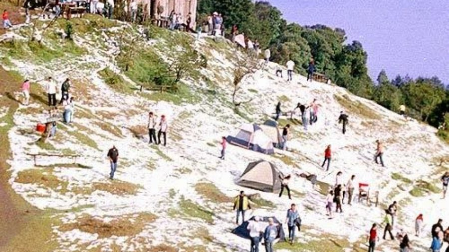

Goze y diviertase de una maravillosa vista

Disfute de un aire fresco

Recorra a pie, moto, auto; como se sienta mas comodp con tal de disfrutar de la natualeza


| # | Cantón Río Chiquito | Puente colgante | Central picos de la montaña |
|---|---|---|---|
| 1 |  |
 |
 |
| 2 | Caracterizado por la producción y comercio de productos elabrados a base de frutas y azucar | El puente tiene 90 metros de longitud y atraviesa el cauce del río Lempa a la altura del caserío Los Jobos del cantón El Jute, jurisdicción de Texistepeque. | El cerro El Pital es de un clima muy fresco ideal para quienes disfrutan del frio al acampar con familia o amigos. Siendo la zona recomendada su parte más alta. Específicamente en la zona central de los picos de la montaña, donde se generan corrientes de aire increíbles. |


 Parque Los Chorros by ALEXANDER RIVERA
Parque Los Chorros by ALEXANDER RIVERA